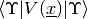

IOM_plugin_overlaplcwp¶
About the IOM_plugin_overlaplcwp class¶
The WaveBlocks Project
@author: R. Bourquin @copyright: Copyright (C) 2010, 2011, 2012, 2013, 2014, 2015, 2016 R. Bourquin @license: Modified BSD License
Class documentation¶
The WaveBlocks Project
IOM plugin providing functions for handling various overlap matrices of linear combinations of general wavepackets.
@author: R. Bourquin @copyright: Copyright (C) 2013 R. Bourquin @license: Modified BSD License
-
IOM_plugin_overlaplcwp.add_overlaplcwp(self, parameters, timeslots=None, matrixsize=None, blockid=0, key=('ov', 'ovkin', 'ovpot'))[source]¶ Add storage for various overlap matrices. We can store one matrix type per key.
Key name Matrix ov
ovkin
ovpot Note that ‘strange’ errors occur if we later try to load or save matrices for a key we did not initialise with this function.
Parameters: - parameters – A
ParameterProviderinstance. It can be empty and is not used at the moment. - timeslots – The number of time slots we need. Can be set to
Noneto get automatically growing datasets. - matrixsize (Pair of integers or
None.) – The (maximal) size of each of the overlap matrices. If specified this remains fixed for all timeslots. Can be set toNone(default) to get automatically growing datasets. - blockid – The ID of the data block to operate on.
- key (Tuple of valid identifier strings that are
ov,ovkinandovpot. Default is("ov", "ovkin", "ovpot").) – Specify which overlap matrices to save. All are independent.
- parameters – A
-
IOM_plugin_overlaplcwp.delete_overlaplcwp(self, blockid=0)[source]¶ Remove the stored overlap matrices.
Parameters: blockid – The ID of the data block to operate on.
-
IOM_plugin_overlaplcwp.has_overlaplcwp(self, blockid=0, key=('ov', 'ovkin', 'ovpot'))[source]¶ Ask if the specified data block has the desired data tensor.
Parameters: - blockid – The ID of the data block to operate on.
- key (Tuple of valid identifier strings that are
ov,ovkinandovpot. Default is("ov", "ovkin", "ovpot").) – Specify which overlap matrices to save. All are independent.
-
IOM_plugin_overlaplcwp.load_overlaplcwp(self, timestep=None, blockid=0, key=('ov', 'ovkin', 'ovpot'))[source]¶ Load overlap matrices of linear combinations of general wavepackets.
Parameters: - timestep – Load only the data of this timestep.
- split – Split the data array into one array for each component.
- blockid – The ID of the data block to operate on.
- key (Tuple of valid identifier strings that are
ov,ovkinandovpot. Default is("ov", "ovkin", "ovpot").) – Specify which overlap matrices to save. All are independent.
Returns: A list of
ndarrayitems. Their shapes depend on the exact value of the above arguments.
-
IOM_plugin_overlaplcwp.load_overlaplcwp_shape(self, blockid=0, key=('ov', 'ovkin', 'ovpot'))[source]¶ Load the shape of the overlap matrices specified.
Parameters: - blockid – The ID of the data block to operate on.
- key (Tuple of valid identifier strings that are
ov,ovkinandovpot. Default is("ov", "ovkin", "ovpot").) – Specify which overlap matrices to save. All are independent.
Returns: A list of
ndarrayeach having two columns.
-
IOM_plugin_overlaplcwp.load_overlaplcwp_timegrid(self, blockid=0, key=('ov', 'ovkin', 'ovpot'))[source]¶ Load the timegrid corresponding to the overlap matrices specified.
Parameters: - blockid – The ID of the data block to operate on.
- key (Tuple of valid identifier strings that are
ov,ovkinandovpot. Default is("ov", "ovkin", "ovpot").) – Specify which overlap matrices to load. All are independent.
Returns: A list of
ndarrayeach having one column.
-
IOM_plugin_overlaplcwp.save_overlaplcwp(self, data, timestep=None, blockid=0, key=('ov', 'ovkin', 'ovpot'))[source]¶ Save overlap matrices of linear combinations of general wavepackets. In principle this function also supports non-square matrices.
Parameters: - data (A list of
ndarrayentries.) – The data matrices to save. - timestep – The timestep at which we save the data.
- blockid – The ID of the data block to operate on.
- key (Tuple of valid identifier strings that are
ov,ovkinandovpot. Default is("ov", "ovkin", "ovpot").) – Specify which overlap matrices to save. All are independent.
- data (A list of